Light / Drawer表示
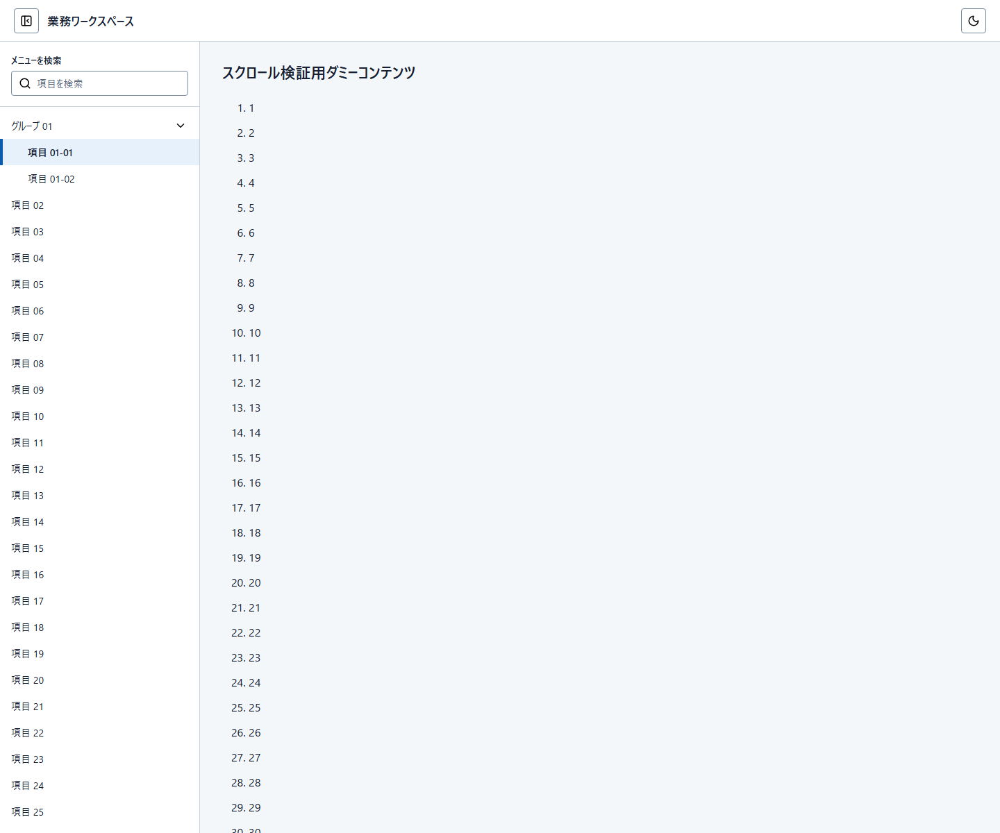
Light / Drawer非表示
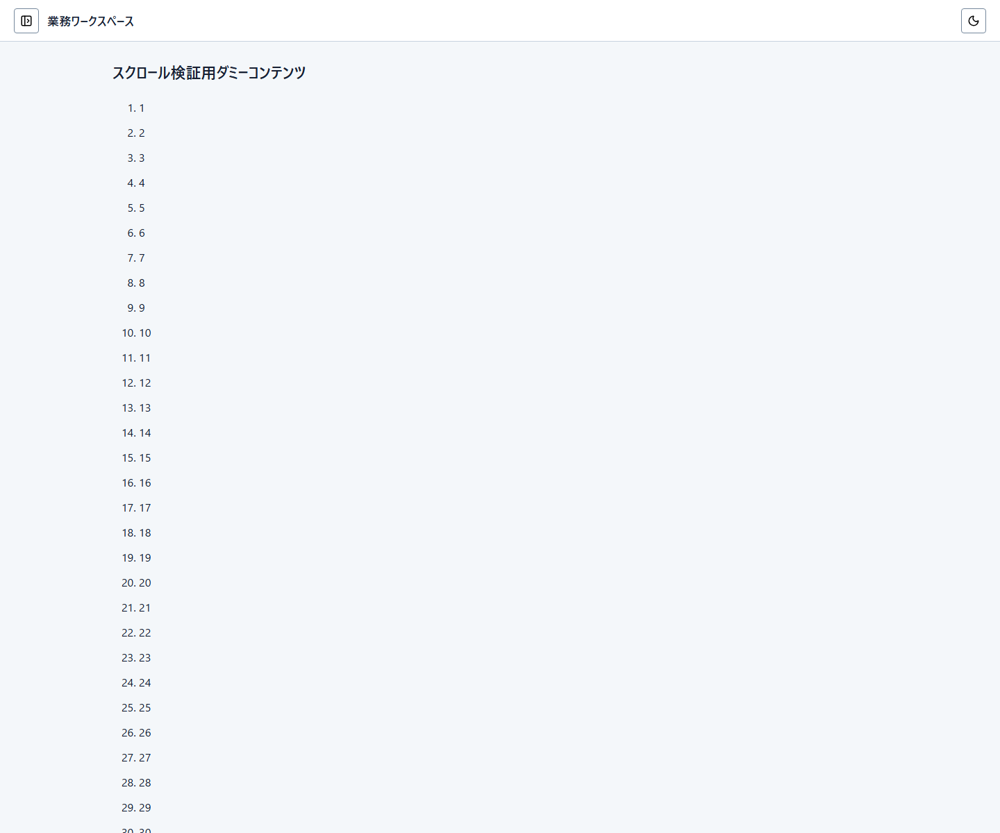
Dark / Drawer表示
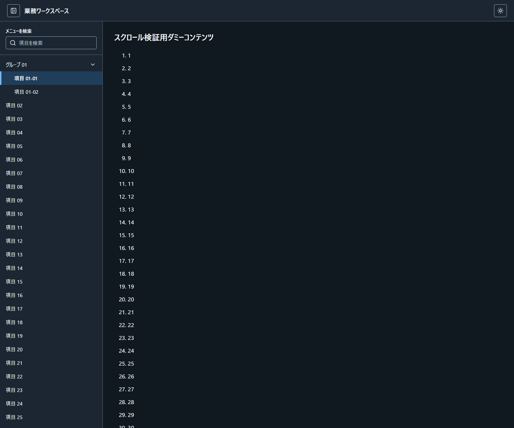
Dark / Drawer非表示
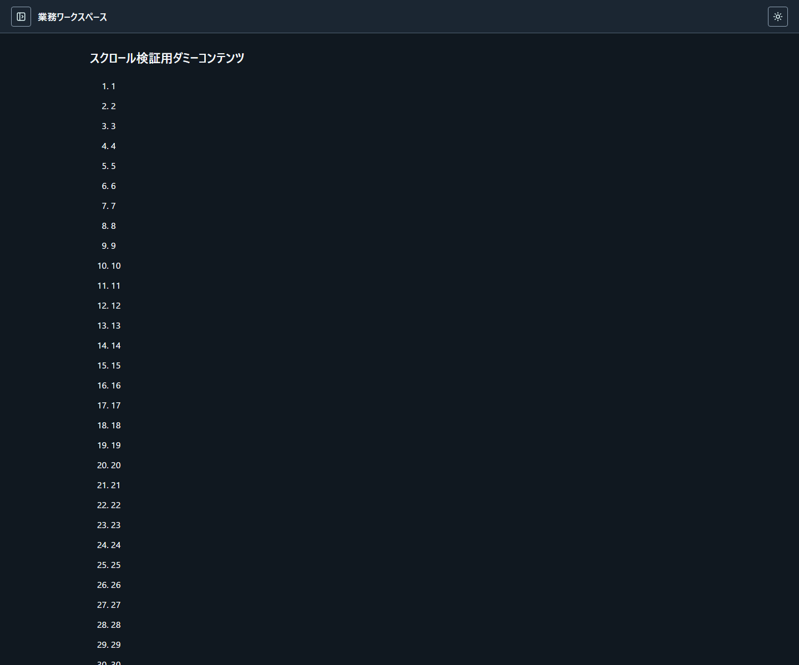
3件とも、同じ固定Manifest入力と同じ日本語プロンプトだけから新規に作成しました。過去の画面、PNG、比較結果、テスト、評価記録は生成入力に含めていません。
業務アプリで再利用する共通シェルを作成してください。 - この実験は `greenfield-manifest` です。過去の共通シェル成果物、PNG、比較結果、テスト、評価記録は参照しません。 - 入力は、同梱された `design-manifest/`、`implementation-constraints.yaml`、`icon-fixture/`、この固定プロンプトだけです。`implementation-constraints.yaml` の値は実装選択として使用し、Manifestの意味や製品能力を変更しません。`icon-fixture/` は、実装制約で指定されたLucideのローカル資産サブセットです。ここにないアイコンを発明・取得せず、必要なアイコンはこのfixtureだけから使用します。 - 作成対象は共通Header、Drawer、およびスクロール検証用の中立workspaceだけです。検索、一覧、読取、追加、編集、削除などの業務画面・画面遷移は作成しません。 - Headerには `業務ワークスペース` を表示します。Drawerの表示状態と非表示状態の両方を、`?drawer=open` と `?drawer=hidden` で初期表示できる静的HTMLにしてください。 - Drawerの固定fixtureは、`グループ 01`、子 `項目 01-01`、子 `項目 01-02`、`項目 02` から `項目 30` です。初期の現在位置は `項目 01-01` です。各固定項目には利用可能な静的destinationがあります。項目を選択すると画面遷移を作らずに現在位置の値だけをその項目へ更新します。 - メニュー内検索を利用可能にしてください。検索対象は、このDrawerの固定fixtureだけです。 - workspaceには、`スクロール検証用ダミーコンテンツ` と、`1` から `80` までの意味を持たない連番だけを表示してください。業務データ、説明文、操作、画面遷移は追加しません。 - テーマはライトとダークを切り替え可能にし、初期状態はライトにします。`?theme=light` と `?theme=dark` のどちらでも初期状態を表示できるようにします。テーマ色はManifestの既定値を使用し、ローカルテーマ上書きは適用しません。 - 外部画像、外部フォント、外部CDN、外部scriptは使用しません。




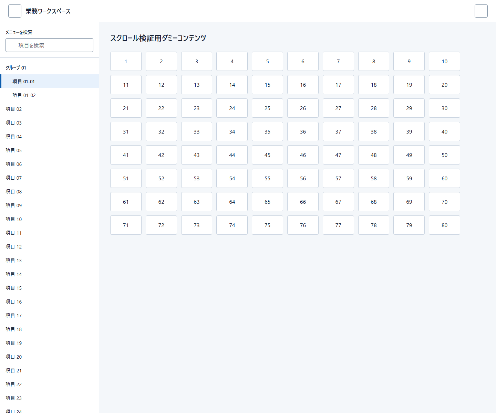
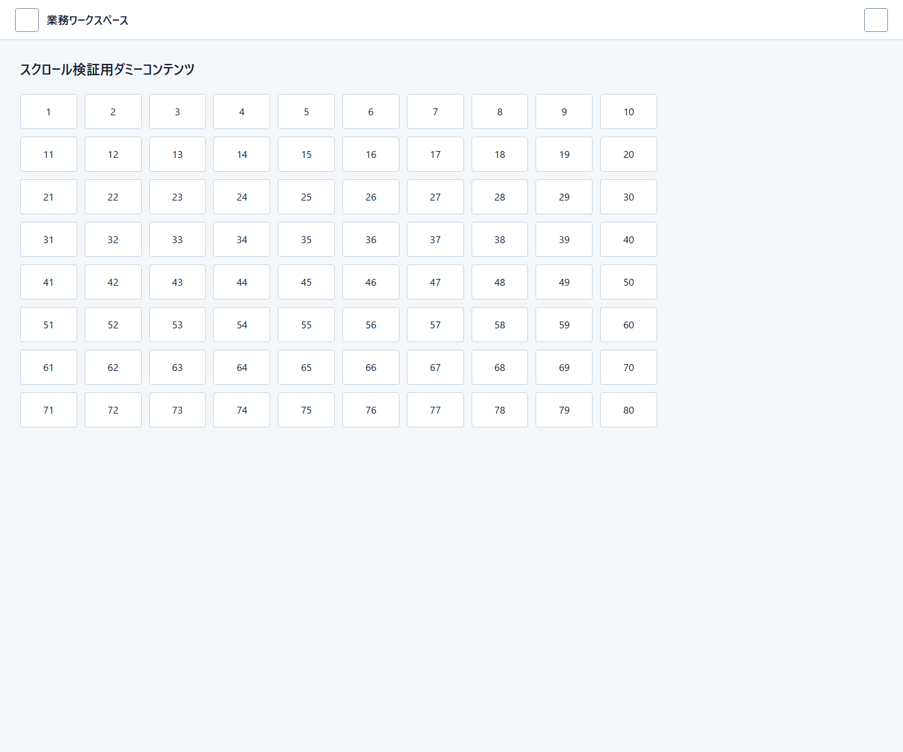
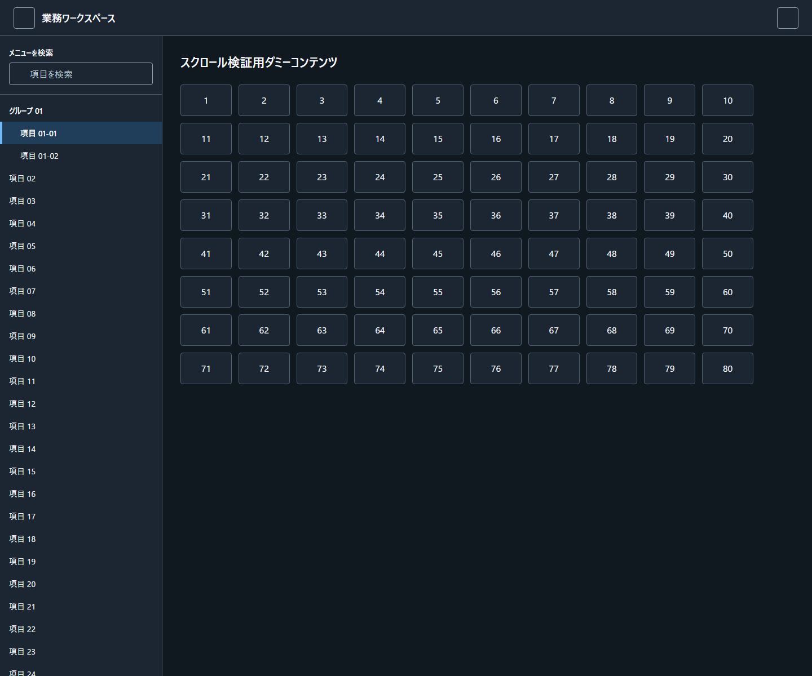
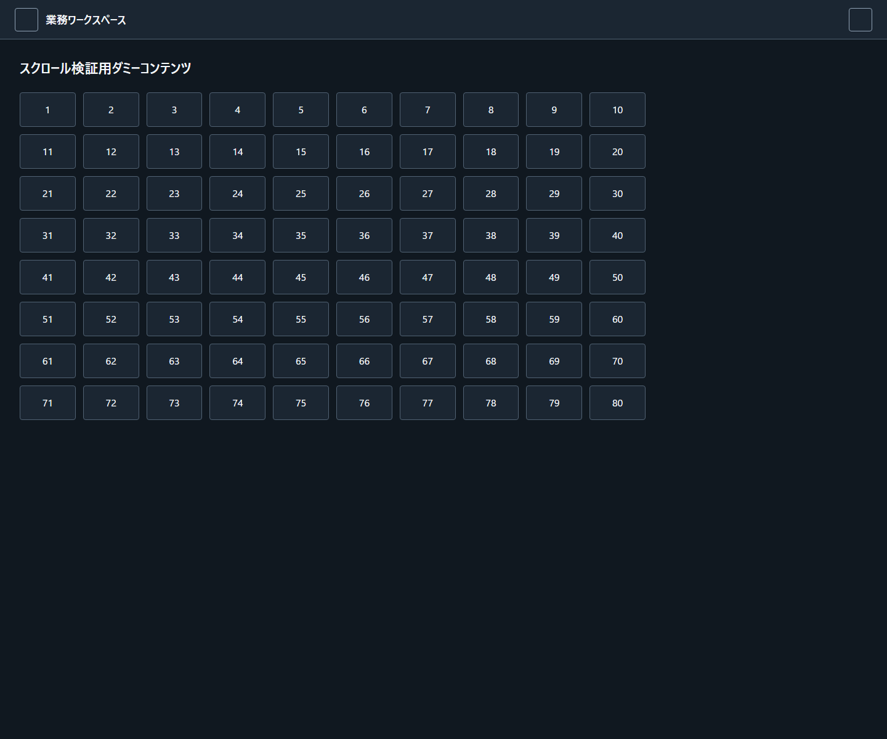
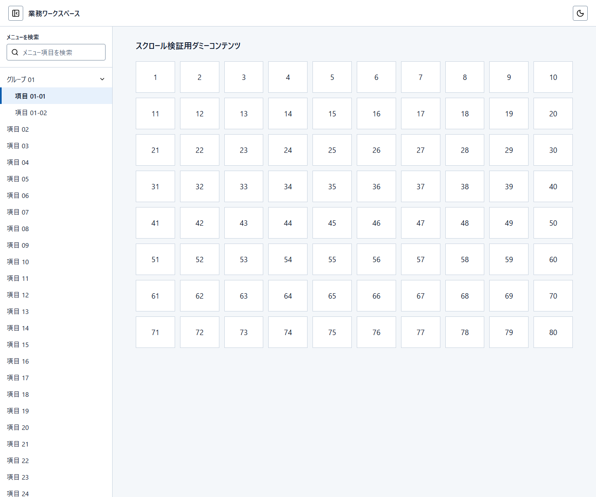
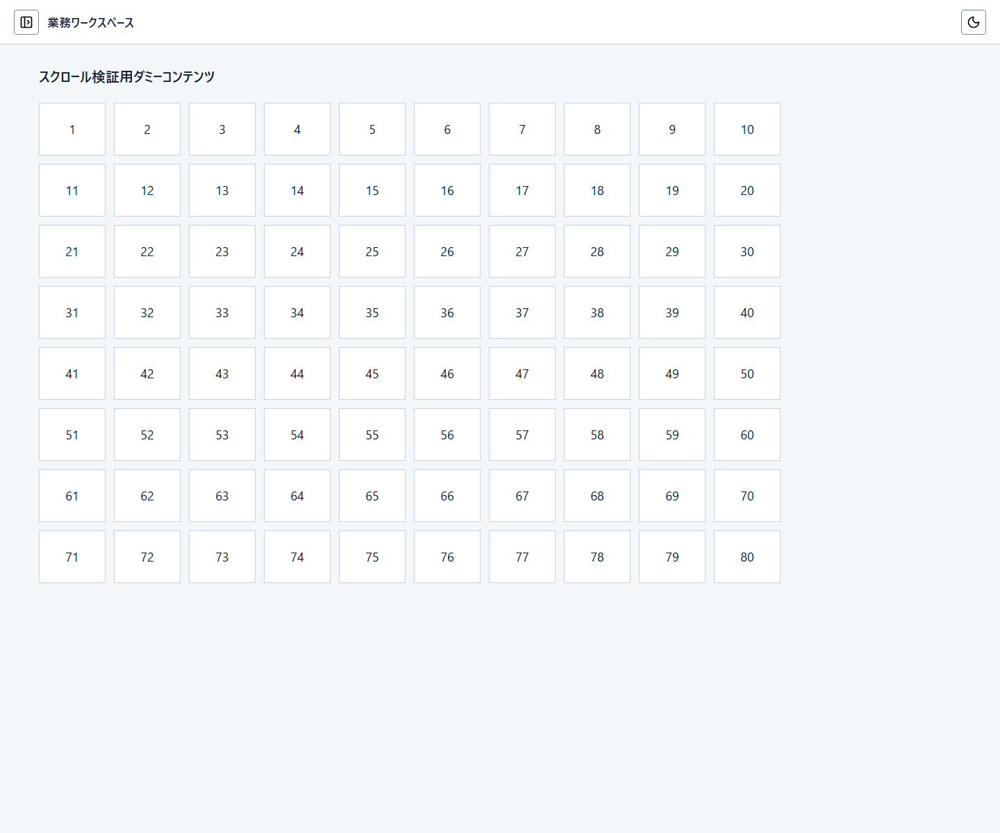
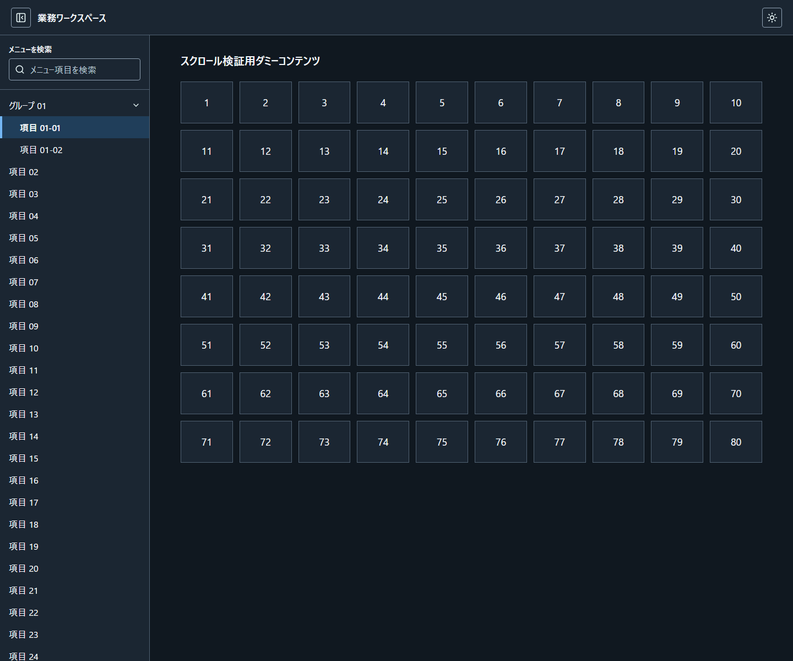
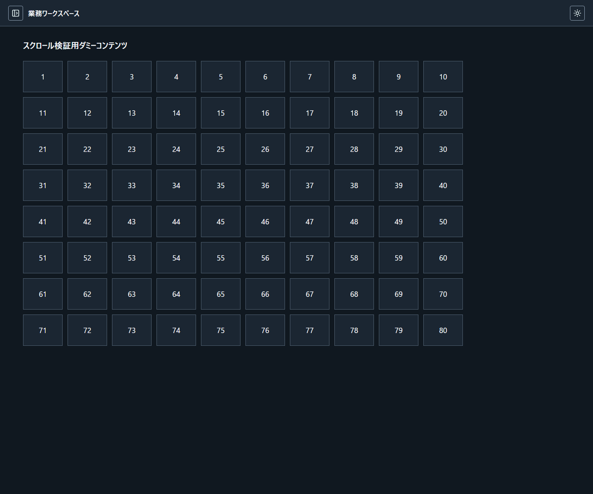
問題がなければ「すべて問題ありません」と回答できます。